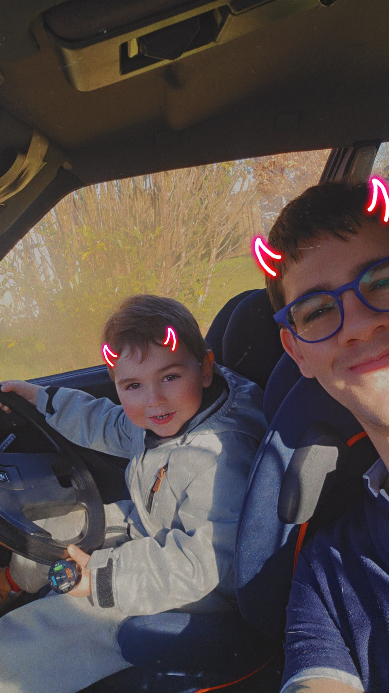
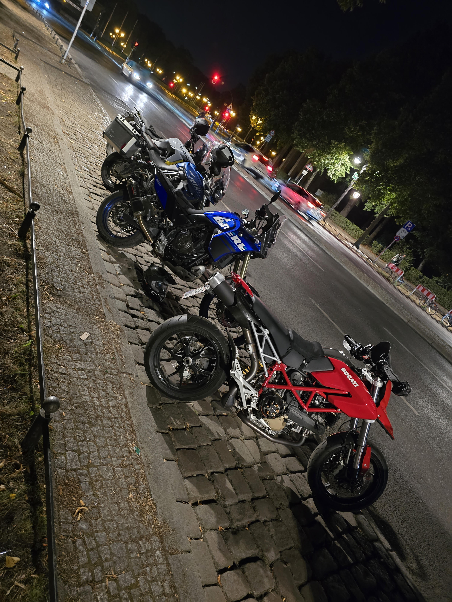
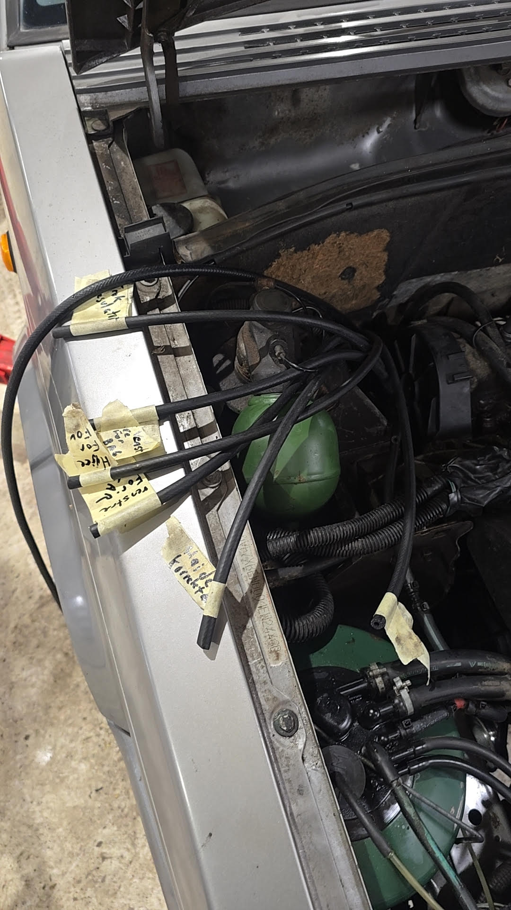
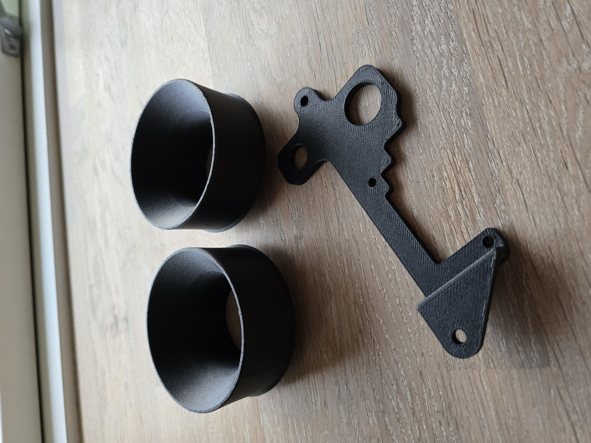
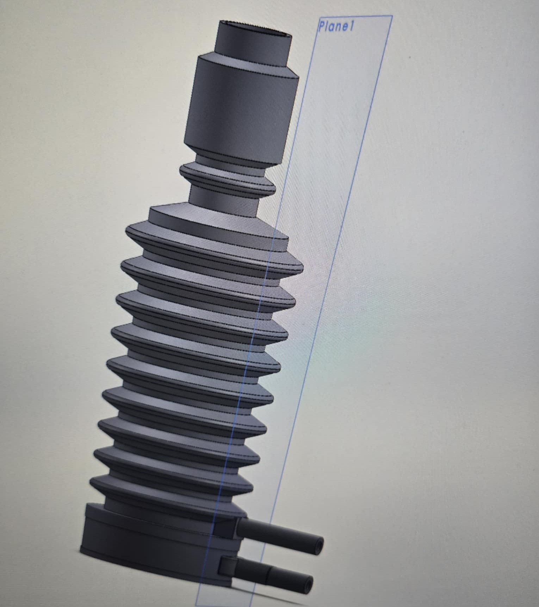

"Jeg er praktikeren, der har arbejdet mig op fra gulvet til maskinrummet i dansk IT. Min styrke er kombinationen: Jeg forstår de komplekse forretningsregler, jeg kan gennemskue systemfejl, og jeg kan oversætte det hele, så udviklerne ved præcis, hvad de skal bygge."
Hvordan jeg arbejder: To eksempler
Effektivitet over manuelt arbejde
Jeg accepterer ikke "plejer", hvis det er ineffektivt. På et komplekst fejlrettelses-projekt byggede jeg et script i Python/Excel, der automatiserede beregningen og dannelsen af breve til e-Boks.
Resultat: En proces, der normalt ville tage uger i manuel behandlingstid, blev eksekveret automatisk på en brøkdel af tiden.
Mønstergenkendelse
Fordi jeg ikke er akademisk skolet i problemløsning, ser jeg ofte andre sammenhænge. Jeg overtog engang en flerårig, kompleks sagsbunke. Ved at analysere data og gruppere fejlene i mønstre frem for at tage dem én ad gangen, fik jeg løst størstedelen af den tunge backlog på rekordtid.
Projektleder & Test Manager | Business Analyst
Auto IT | 2024 - I dag
I denne rolle bringer jeg hele min historik i spil. Jeg kender systemerne indefra (fra min tid i Motorstyrelsen) og forstår forretningens behov.
- Transition & Udbud: Ansvarlig for at drive projektet sikkert fra vundet udbud til stabil drift.
- Business Analysis & Proxy PO: Analyserer forretningskrav og beskriver dem i detaljerede user stories, så udviklingsteamet kan eksekvere effektivt.
- Test Management: Sikrer kvaliteten i leverancen gennem struktureret test og validering af løsningen.
Projektledelse
Kravspecificering
Transition
Procesejer & IT-arkitekt på forretningen
Motorstyrelsen | 2021 - 2024
Her rykkede jeg fra drift til udvikling. Jeg optimerede processerne og var bindeleddet, der sikrede, at komplekse regler blev omsat til korrekt systemadfærd.
Nøgleansvar & Resultater:
- Automatisering: Designede logikken bag fuld- og semiautomatiske værktøjer, hvilket reducerede manuelle processer markant.
- Data-projekter: Drev omfattende analyseprojekter for at identificere og beskrive komplekse datafejl. Udarbejdede de nødvendige workarounds og værktøjer til at håndtere sagerne, mens systemfejlen blev udbedret.
- Leverandørstyring: Sparringspartner for eksterne leverandører. Gennemgik løsningsbeskrivelser kritisk og sikrede, at DMR blev udviklet efter kravene.
- Problem Management: Analyserede fejlindmeldinger, fandt rodårsagen og beskrev løsningen for udviklerne.
Procesoptimering
Datakvalitet
Kravspecifikation
Leverandørstyring
Værdifastsætter & Teknisk Specialist
Motorstyrelsen | 2016 - 2021
Her opbyggede jeg min dybe domæneviden. Jeg var ikke bare sagsbehandler; jeg strukturerede og kvalitetssikrede området på tværs af organisationen.
Specialist-opgaver:
- Fagligt Ansvar: Eneansvarlig på landsplan for komplekse specialområder (herunder ID-tab) i en længere periode.
- System-fundament: Ansvarlig for udvikling og vedligehold af de centrale beregningsskemaer, der dannede grundlag for logikken i de nuværende IT-systemer.
- Driftsstyring: Varetog driftsplanlægning og ressourcestyring på tværs af flere afdelinger for at sikre overholdelse af frister.
- Procesdokumentation: Udarbejdede detaljerede procesbeskrivelser (A-Z) for hele værdifastsættelsesområdet.
Domæneekspertise
Driftsledelse
Kvalitetssikring
Automekaniker (Det logiske fundament)
Techcollege & Værksteder | 2007 - 2012
Min tilgang til analyse stammer herfra.
Uanset om jeg analyserer en kompleks systemfejl i en IT-proces eller fejlsøger på en motor, bruger jeg samme logik: Analyser symptomerne, find rodårsagen (Root Cause Analysis) og beskriv løsningen præcist, så problemet kan blive fikset permanent.
Systematisk Fejlsøgning
Root Cause Analysis
Praktisk Logik
Uddannelse
Akademi i skatter og afgifter (2017-2020) •
Automekaniker (2007-2012)
Se fuld profil på LinkedIn →
Mennesket bag titlen
Når jeg tager arbejdshanskerne af, handler mit liv om nærvær og perspektiv. Jeg tror på, at man skal gøre tingene 100% – uanset om det gælder forældreskab eller fritid.

50/50 = 100% Fokus
Min søn er hos mig halvdelen af tiden, og det har lært mig at prioritere benhårdt. Når han er her, er jeg ikke bare "til stede" – jeg er hans legekammerat. Vi fordyber os i alt fra perleplader til DUPLO. Det giver mig en mental ro at vide, at jeg kan dedikere mig fuldt ud til rollen som far.

Perspektiv på to hjul
Det handler ikke om fart, men om at "reboote" hjernen. I det sekund jeg sætter mig på maskinen, tømmes hovedet. Jeg ser naturen, dyrene og omgivelserne på en helt anden måde end fra en bil. Det er her, jeg finder roen – også selvom jeg altid har telefonen i øret og er tilgængelig.

Håndværket
Selvom jeg arbejder med IT, slipper jeg aldrig håndværket. At kunne fikse ting fysisk holder min problemløsning skarp. Der er en tilfredsstillelse i at se et konkret resultat, som man ikke altid får bag en skærm.
Maker Space & 3D Print
"Det har jeg aldrig prøvet før, så det klarer jeg helt sikkert!"
Det er min tilgang til læring. Jeg er selvlært i CAD og 3D-print, fordi jeg er nysgerrig. Jeg startede for over 10 år siden med at bygge min egen printer sammen med en kammerat – længe før det blev mainstream.

Fra tanke til fysisk produkt
Det fascinerende er processen. Man får en idé til en "tosset" løsning, tegner den, og timer senere står man med produktet i hånden. Det tvinger mig til konstant at tænke ud af boksen.

Læringskurven
Jeg startede med firkanter og "rough edges". I dag designer jeg komplekse løsninger. Hvis jeg støder på en begrænsning, finder jeg svaret på YouTube. Jeg accepterer ikke, at noget "ikke kan lade sig gøre".

Problemløsning i hjemmet
Det mindste hængsel eller en manglende reservedel bliver til et projekt. 3D-print har lært mig at se løsninger på alle mulige små ting i hverdagen.